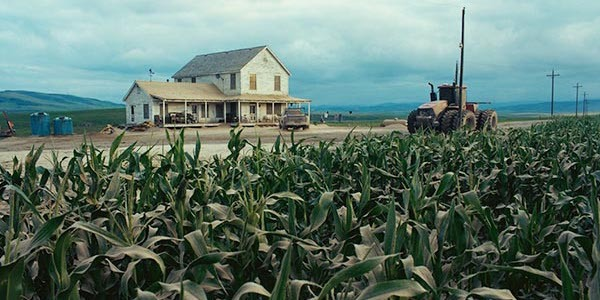

Para las escenas que muestran vastos campos de maíz en "Interstellar", Christopher Nolan decidió cultivar maíz real en lugar de depender de CGI. El equipo de producción cultivó 500 acres de maíz, lo que no solo resultó en imágenes impresionantes y realistas, sino que también fue más económico. Después de filmar, el maíz fue cosechado y vendido, y las ganancias se destinaron a cubrir los costos de producción. Este enfoque práctico no solo enriqueció la autenticidad visual de la película, sino que también demostró la dedicación de Nolan a los detalles prácticos.
